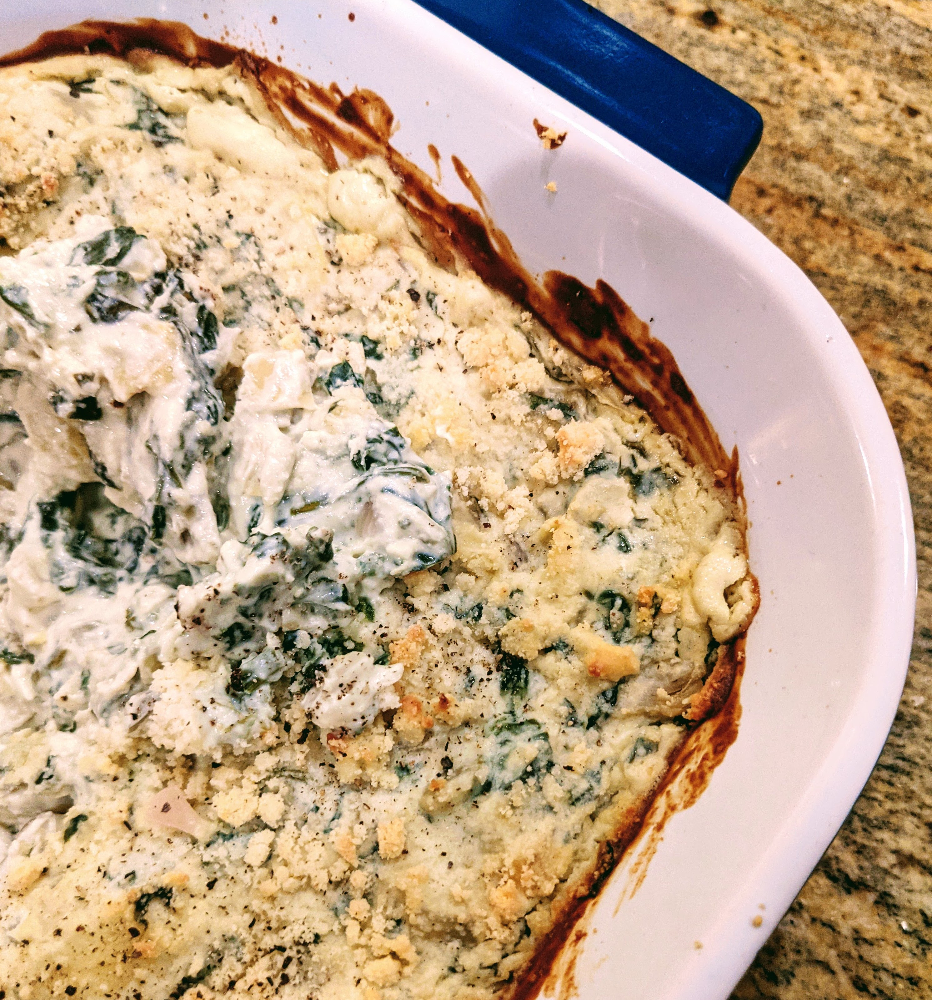

My Recipes
Scallion and Cheese Bread
(A) Butter, Scallions sliced into small size
finely chopped garlic, salt, peper
(B)180g Bread flour, 3g Salt
25g sugar, 4g dried yeast, 100ml Warm milk
1 Egg, 15g ( 1 1/2 tbsp ) Soften butter
In a large mixing dry ingredients.
Add in wet ingredients and mix
Proof dough until doubled in size
Top with cheese and bake at 350°F for 15 min.
Spicy Hand-pulled noodles
(A) Laoganma spicy chili crisp
Black vinegar, Scallions, minced garlic
(B) 2 cups all-purpose flour
1/2 tsp salt
1/2 cup warm water
Take dough, stretch + slap until thin and long
repeat x 12 then boil in salted water x 3 min
Top with chili toppings
Brown Butter
In a saucepan, melt the butter on medium heat.
Stirring occasionally, until foaming and golden brown
There should be a nutty aroma
about 5-7 minutes. Set aside to cool.

Baba Ganoush
Roast the eggplants for 25-30 minutes
Blend with tahini, lemon juice, garlic
Top with crushed parsley and pine nuts,
red pepper flakes
generous olive oil
Kung Pao Chicken Pizza
Spicy chicken pieces,
Tossed with peanuts and peppers,
A feast for the senses,
A cheesy, spicy delight.
Dumplings, soft and warm,
Filled with flavors, rich and bold,
A comfort, true,
Bringing back memories,
Of home, family, love.

10 oz. frozen chopped spinach, thawed and drained
1 cup crumbled feta cheese
1/2 cup sour cream
1/2 cup mayonnaise
1 clove garlic, minced
Salt and pepper, to taste